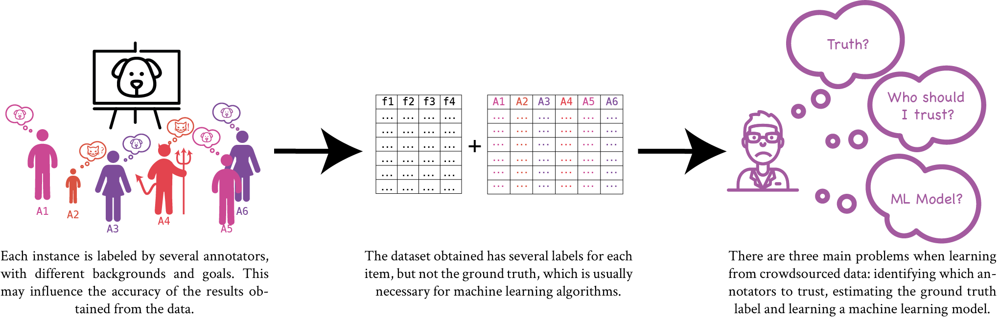

spark-crowd¶
Learning from crowdsourced Big Data
Learning from crowdsourced data imposes new challenges in the area of machine learning. spark-crowd helps practitioners when dealing with this kind of data at scale, using Apache Spark.
The main features of spark-crowd are the following:
- It implements well-known methods for learning from crowdsourced labeled data.
- It is suitable for working with both large and small datasets.
- It uses Apache Spark, which allows the code to run in different environments, from a computer to a multi-node cluster.
- It is suitable both for research and production environments.
- It provides an easy to use API, allowing the practitioner to start using the library in minutes.
See the Quick Start to get started using spark-crowd
spark-crowd is licensed under the MIT license.